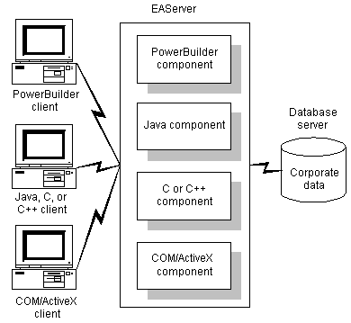
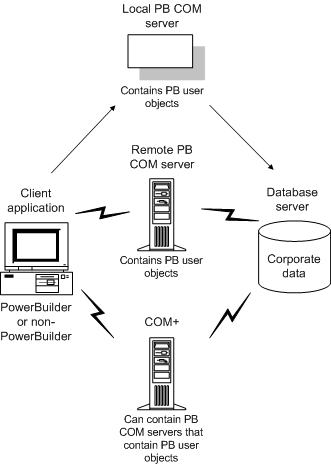
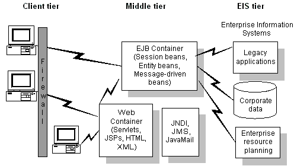

PowerBuilder developers can build clients that invoke the services of Sybase EAServer and COM+ servers, and build components (or objects) that execute business logic inside each of these servers.
PowerBuilder also provides support for building clients for Enterprise JavaBeans components (EJBs) running on any J2EE-compliant server.
PowerBuilder and EAServer are fully integrated. A PowerBuilder application can act as a client to any EAServer component. In addition, EAServer can contain PowerBuilder custom class user (nonvisual) objects that execute as middle-tier components.
EAServer hosts the PowerBuilder virtual machine natively. This means that EAServer can communicate directly with PowerBuilder nonvisual user objects, and vice versa. EAServer components developed in PowerBuilder can take full advantage of the ease of use and flexibility of PowerScript and the richness of PowerBuilder's system objects.
Components developed in PowerBuilder can exploit features such as transactions, interoperability, and instance pooling. As shown in Figure 23-1, any type of client can access any type of component running in EAServer, regardless of the language used to develop the component.

For more information, see Chapter 24, "Building an EAServer Component" and Chapter 25, "Building an EAServer Client ."
A PowerBuilder application can act as a client to a COM server. The server can be built using PowerBuilder or any other COM-compliant application development tool and it can run locally, on a remote computer as an in-process server, or in COM+, as shown in Figure 23-2.

You can develop a custom class user object containing business logic in PowerBuilder and then package the object as a COM object. A PowerBuilder COM server can include one or more PowerBuilder custom class user objects. You code the user objects in the User Object painter and then build the server in the Project painter. You can also deploy the COM server directly to a local COM+ server or create a COM+ package from the Project painter.
For more information, see Chapter 27, "Building a COM or COM+ Component" and Chapter 28, "Building a COM or COM+ Client."
J2EE, the Java 2 Platform, Enterprise Edition, is the official Java framework for enterprise application development. A J2EE application is composed of separate components that are installed on different computers in a multitiered system. Figure 23-3 shows three tiers in this system: the client tier, middle tier, and Enterprise Information Systems (EIS) tier. The middle tier is sometimes considered to be made up of two separate tiers: the Web tier and the business tier.

Client components, such as application clients and applets, run on computers in the client tier. Web components, such as Java servlets and JavaServer Pages (JSP) components, run on J2EE servers in the Web tier. Enterprise JavaBeans (EJB) components are business components and run on J2EE servers in the business tier. The EIS tier is made up of servers running relational database management systems, enterprise resource planning applications, mainframe transaction processing, and other legacy information systems.
In PowerBuilder, you can build client applications that use the services of EJB components running on any J2EE-compliant server. For more information, see Chapter 29, "Building an EJB client ."
You can also deploy custom class user objects to third-party application servers on which the PowerBuilder Application Server Plug-in is installed. The Plug-in is a Sybase product that supports several Web servers. Wizards that help you generate application server components that you can deploy to these servers and proxies that you can use to build client applications are built into PowerBuilder, but you must purchase the Plug-in product separately. The wizards and techniques are very similar to those used for building EAServer components and clients. For more information, see the documentation for the PowerBuilder Application Server Plug-in on the Product Manuals Web site ..